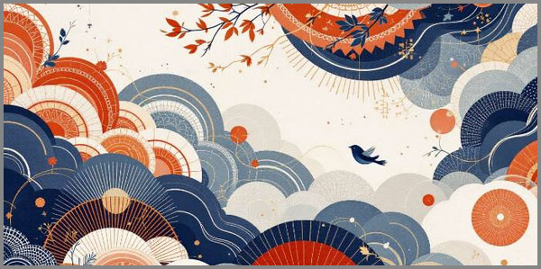

23. Անվերջության Թափանցիկ Կտորները Մոռացված Խոսքերի Հորիզոնում
 |
Կյանքը շարունակաբար շարժվում է մեզանից աննկատ, բայց երբեմն նրանից մնացած թափանցիկ կտորներ են հայտնվում մեր առօրյայում, դառնալով տեսանելի: Սովորաբար դրանք մոռացված ու չասված խոսքեր և աննկատ անցած պահեր են, սակայն երբեմն դրանք միանգամից վերակենդանանում են լռության մեջ՝ սառած ու մեզ հետ խոսելու պատրաստ:
Երբ մենք չենք կարողանում լսել կամ հասկանալ այս խոսքերը, դրանք ենթարկվում են աննախադեպ կրկնողության ժամանակի մեջ դառնալով մեր հիշողության մի մասը՝ վերածվելով անընդհատ կրկնվող տեսանելի շերտերի՝ մեր հիշողության թափանցիկ խորքում և ամեն անգամ քայքայվելով, վերադարձնում են մեզ իրենց վերապրումը:
Այս զննության մեջ մենք հանդիպում ենք այդ խտացված շերտերին, որտեղ ասվածն ու չասվածը համատեղում են մեր ներքին աշխարհը՝ անցյալից մինչև ներկա, լռության միջոցով մի նոր խոսք ստեղծելով: Ահա թե ինչպես է անցնում մեր ճանապարհը ընկալումների ու բացահայտումների միջով, որտեղ ամեն մի խճճված մտքորոշում կամ չասված ճշմարտություն անընդհատ դիմում է մեզ՝ նորովի արտահայտվելու համար:
Բայց միշտ մնում է հարց՝ արդյոք մենք գիտենք, թե ինչպես լսել այս նոր խոսքը, որը մեզ տվել է ժամանակն ու լռությունը, թե պարզապես անցնում ենք դրա կողքով՝ առանց դա ի գիտություն ընդունելու: Այս ստեղծագործությունը մի փորձ է գտնելու այդ կապը, հասկանալու ոչ միայն այն, ինչ ասված է, այլև այն, ինչը միշտ եղել է լռության մեջ՝ խթանելով մեր մտածելակերպը և ընկալման խորությունն այնպես, ինչպես մենք տեսնում ենք ինքներս մեզ և ամբողջ աշխարհը:
Թափանցիկ կտորների խտացվածած իրականությունը
Հաճախ չնկատելով այն, ինչն անընդհատ շրջապատում է մեզ՝ գիտակցությունից դուրս գտնվող հիշողությունները, պատկերները կամ զգացողությունները, որոնք թափանցիկ են ու հասանելի են այն աստիճան, որ դրանց ամբողջովին ուշադրություն չի դարձվում։ Այդ թափանցիկ կտորները՝ հիշողության մասունքները, գոյություն ունեն, սակայն այնքան աննշմարելի ու անտեսանելի են իրենց թափանցիկությամբ, որ դրանց միջով կարելի է տեսնել առանց դրանց ճանաչելու։ Դրանք լիովին զգալի են, բայց պարզապես հասկանալի չէ այն ամբողջությունը, որը փորձում են արտահայտել։
Այս խտացված իրականությունը կազմվում է հենց այդպիսի կտորներից՝ երբ անցյալը շոշափում է ներկան, բայց ոչ ամբողջությամբ։ Մեր հիշողությունները խտանում են՝ լցվելով պարզ պատկերներով ու զգացմունքներով, որոնք իրար մեջ փոխվում են՝ դարձնելով մեզ անխուսափելիորեն այն, ինչ մենք երբեք չենք նկատել։
Այս խտացված իրականությունը մի տեսակ պարադոքս է՝ ինչպես աներևույթ, այնպես էլ միաժամանակ շատ մոտ այնքան, որ քեզ թվում է հիմա կբռնես: Բայցևայնպես՝ բազմիցս այդ կտորները դուրս են գալիս մեր տեսադաշտից, քանի որ չենք ուզում տեսնել դրանք: Չենք ուզում տեսնել, որովհետև դրանք այնքան անբառ են, որ միայն դրանց մեկ անկյան իսկ բացահայտումը ստեղծաբանում է բոլորովին նոր իրականություն՝ խեղված, բայց հարուստ։
Հիշողությունները դառնալով այս ամենի մասնիկը՝ առանց հստակ ձևավորման, բայց ընկալվող՝ ստեղծում են տպավորություն, որ մենք ապրում ենք ապագայի մեջ այնտեղ, որտեղ հիշողությունները դեռ չենք հասցրել տեղավորվել, բայց արդեն նկատելի են, սպասելով սահելու մեր մտքերում։
Այսպիսով, թափանցիկ կտորները այն աննկատ ու խիստ թափանցիկ հատվածներն են, որոնք մշտապես գոյություն ունեն, բայց միայն ուշադիր զննելու դեպքում են սկսում բացվել՝ բերելով մեզ այնպիսի պատկերներ, որոնք թվում են պարզապես անհասանելի։ Մինչև մենք դրանց մասին վերջապես հասկանում ենք, դրանք արդեն հասցնելով ծածկվել՝ վերադառնում են մեր հիշողություն, հիշեցնելով իրենց իսկ գոյությունը։
Թափանցիկ կտորները լուռ գալիս են ու մնում, սպասելով, որ տեսնենք՝ հիշեցնելու, թե ամեն բան անցողիկ է, բայց ոչինչ չի կորչում:
Լռության ուրվականները
Լռությունը երբեմն այնքան հզոր է, որ թվում է թե այն ունի իր սեփական ուրվականները։
Դրանք անտեսանելի ներկայություններ են, որոնք քայլում են մեր մտքերի ստվերներում, մնում մեր հիշողության չբացված սենյակներում։ Ուրվականները չեն վախեցնում, չեն շշնջում, այլ պարզապես սպասում են, որ մենք համարձակվենք լսել այն, ինչ չեն ասել մեզ՝ կամ մենք ինքներս մեզ։
Յուրաքանչյուր լռություն իր խորքում պահում է մի պատմություն, որն ասված չէ, բայց երբեք էլ չի լքել իր ժամանակը։ Այդ պատմությունները կարծես անշարժ կանգնած են մեր գիտակցության եզերքին՝ առանց փորձելու ներս մտնել, բայց միշտ պատրաստ մի ակնթարթում հայտնվելու մեր աչքերի առաջ։
Լռության ուրվականները չեն շտապում։ Նրանք ապրում են մի ժամանակում, որը ոչ անցյալ է, ոչ ներկա։ Երբեմն դրանք գալիս են աննշմարելի քայլերով, նստում մեր մտքի մութ անկյունում և երկար մնում՝ մինչև մենք սկսենք հարցեր տալ։ Ու հենց այդ պահին լռությունը փոխվում է՝ սկսում է արձագանքել մեր ներսի ձայնին։
Երբ փորձում ես խուսափել նրանցից, նրանք անհետ չեն կորում։ Լռության ուրվականը պարզապես տեղափոխվում է մի ուրիշ խորք, որտեղ կսպասի այնքան, մինչև դու պատրաստ լինես տեսնել այն։ Նրանք չեն մոռանում, չեն ներում և չեն մեղադրում։ Պարզապես հիշեցնում են, որ կա մի բան, որին դեռ պետք է առերեսվես։
Երբ վերջապես համարձակվում ես լսել, հասկանում ես, որ դա լռություն ուրվականը չի խոսում, այլ քո սեփական ձայնի արձագանքն է, որին երբեք թույլ չես տվել արտահայտվել։ Եվ այդ պահին լռությունը դադարում է լինել դատարկություն՝ վերածվելով մի կամուրջի, որ միացնում է քեզ՝ քո հետ, որին վաղուց չես ճանաչել։
Լռության ուրվականները միշտ սպասում են։ Նրանք գալիս են ոչ թե վախեցնելու, այլ վերադարձնելու մեր այն մասերը, որոնք մենք թողել ենք մեզնից հեռու։
Չասված խոսքերի հնչողությունը
Կան խոսքեր, որոնք երբեք չեն արտասանվել, բայց նրանք հնչում են մեզանում ավելի ուժգին, քան ամենաբարձր ձայնը։ Այդ չասված բառերը մնում են օդում կախված, ինչպես թեթև թրթիռներ, որ երբեք չեն հանգչում։ Նրանք չեն ծերանում, բայց չեն խամրում, միայն փոխում են իրենց արձագանքը՝ յուրաքանչյուր լռության մեջ գտնելով նոր երանգ։
Չասված խոսքը նման է հնչյունի, որ չի լսվում ականջով, բայց լսվում է ամբողջ էությամբ։ Այն սահում է մտքի խորքերով, դիպչում հուշերին, կուտակվում սրտի ծալքերում և սպասում է իր ժամին՝ երբ վերջապես կգտնի լսողին։
Երբեմն այդ խոսքերը դառնում են կամուրջներ, որոնք մենք երբեք չենք անցնում, և որոնց մյուս կողմում մնում են մեր չապրված պահերը։ Բայց լինում է նաև այնպես, որ դրանք վերածվում են պատերի՝ բաժանելով մեզ մեր իսկ զգացմունքներից։
Չասված խոսքերի հնչողությունը չի նմանվում խոսքի հստակությանը։ Այն նման է շողքի, որ ընկնում է ջրի մակերևույթին՝ դողդոջուն, փոխվող և երբեք ամբողջությամբ չբռնվող։ Բայց հենց այդ անավարտությունից է գալիս նրանց ուժը։
Մի օր, երբ լռության մեջ հանկարծ լսում ես այդ հնչյունը, հասկանում ես, որ այն միշտ եղել է քեզ հետ, պարզապես դու երբեք չես համարձակվել ընդունել այն։ Եվ երբ ընդունում ես, չասվածը դառնում է ասված՝ ոչ թե բառերով, այլ հասկանալու և ներելու հնչողությամբ։
Չասված խոսքերի հնչողությունը հիշեցնում է, որ ամենախոր զգացմունքները ծնվում են ոչ թե ասվածից, այլ այն բանից, ինչին մենք երբեք ձայն չենք տվել։
Հիշողության արևածագը
Յուրաքանչյուր նոր օր սկսվում է հիշողությունից՝ լուսաբացը մտնում է մեր մտքերի խավար անկյունները և բարձրացնում ծածկված պատկերները։ Հիշողությունը մեր հոգում արևի պես է, որը լույս է սփռում անցյալում կուտակված թափանցիկ պատառիկների վրա՝ ցույց տալով նրանց ձևը, տոնը, զգացողությունը, որը ժամանակին աննկատ էր մնացել։
Երբ հիշողության արևածագը լուսավորում է մեր ներքին աշխարհը, այն միաժամանակ բացահայտում և փակագծում է այնպես, որ որոշ հիշողություններ հանգստանում են խաղաղության մեջ, մյուսները՝ դառնում են մեր գիտակցության վրա ծանրացող ստվերներ։ Յուրաքանչյուր հիշողություն, նույնիսկ ամենափոքրիկ թափանցիկ պատառիկը, հնչում է որպես նոր լույսի շող, որը ստիպում է տեսնել այն, ինչ ժամանակին չենք նկատել։
Այս լուսաբացը ոչ միայն վերականգնում է անցյալը, այլև փոխում է ներկայիս ընկալումը՝ հիշեցնելով, որ հիշողությունը չի սահմանափակվում նրանով, ինչ կարելի է պահել կամ կորցնել։ Այն ստեղծում է ուղի դեպի ներքին նոր տեսլականներ՝ թույլ տալով մեզ հասկանալ մեր անցյալը՝ այն տեսանկյունից, որն առաջ չէր երևում։
Հիշողության արևածագը ցույց է տալիս, որ ամեն մի թափանցիկ կտոր, երբ լուսավորվում է, կարող է բացահայտել ամբողջ աշխարհի խորհրդավոր խորքը։
Ներքին տեղաշարժերի դինամիկան
Մեր ներսում ամեն ինչ շարժվում է՝ անտեսանելի, բայց անընդհատ։ Հույզերը, մտքերը, հիշողության պատառիկները դառնում են փոքր, աննկատ, բայց անխուսափելի տեղաշարժեր, որոնք ձևավորում են մեր ներքին աշխարհը՝ ինչպես հոսող ջուրը հարթում է քարերը գետի մեջ։
Յուրաքանչյուր փոփոխություն, նույնիսկ ամենափոքրիկը, փոխում է հարաբերությունները մեր մտքերի և զգացմունքների միջև։ Ներքին տեղաշարժերը չեն հետևում ուղիղ օրենքների: Նրանք ավելի շատ զգայական, պարբերաբար կասկածելի, երբեմն հակասական են, բայց հենց այդ հակասականությունն է ստեղծում մեր ներաշխարհի խորությունը։
Մենք հաճախ չենք նկատում այս շարժումները, քանի որ նրանք թափանցիկ են, ինչպես թեթև հոսող քամին, բայց հենց նրանք են ձևավորում այն տեսանելի պատկերը, որ մենք ճանաչում ենք որպես ինքնություն։ Ներքին տեղաշարժերի դինամիկան ցույց է տալիս, որ մեր կամքն իրականում ձևավորվում է փոքր և մշտական փոփոխություններով, որոնք շատ հաճախ անցնում են աննկատ, բայց միշտ թողնում են իրենց հետքը։
Ներքին տեղաշարժերի դինամիկան հիշեցնում է, որ ամեն մի թափանցիկ շարժում մեր ներսում կարող է փոխել ամբողջ աշխարհի տեսլականը։
Հորիզոններից եկող թափանցող լույսը
Հորիզոնը միշտ պահում է գաղտնիքը, բայց երբեմն այն լույս է ուղարկում՝ թափանցելով մեր մտածողության ամենաաննկատ անկյունները։ Այս լույսը նուրբ է, բայց անսասան: Այն շոշափում է մեր ներսի թափանցիկ կտորները, բացահայտում նրանց գոյությունը, բայց միևնույն ժամանակ պահում նրանց գաղտնիությունը։
Թափանցող լույսը չի պարտադրում, չի շտապեցնում մեր ընկալումը: Այն պարզապես սպասում է, որ մենք բացենք մեր աչքերը և տեսնենք այն, ինչ միշտ եղել է մեզ մոտ, բայց աննկատ է մնացել։ Երբ լույսը դիպչում է հիշողության պատառիկներին, նրանք սկսում են խոսել՝ առանց բառերի, միայն զգացողություններով, ակնարկներով և հուշերով։
Այս լույսը միաժամանակ արտաքին է և ներքին՝ գալիս է հորիզոնից, բայց ներթափանցում է անմիջապես մեր հոգու խորքը, վերածելով ամեն մի թափանցիկ կտոր նոր տեսանելիության։ Մեր ընկալումը դառնում է ավելի պարզ, ավելի թափանցիկ, քանի որ լույսը չի քողարկում, այլ բացահայտում է ամեն դողդոջուն ստվեր ու մանրամասնություն։
Հորիզոններից եկող թափանցող լույսը հիշեցնում է, որ ամեն մի թափանցիկ պատառիկ կարող է հայտնվել իր ամբողջությամբ միայն այն ժամանակ, երբ պատրաստ լինենք տեսնել այդ լույսը։
Եզրափակող խոսք
Թափանցիկ կտորները, լռության ուրվականները, չասված խոսքերը, հիշողության արևածագը, ներքին տեղաշարժերը, հորիզոններից եկող լույսը՝ բոլորն էլ միացյալ կերպով ձևավորում են մեր ներքնաշխարհի խտացված իրականությունը։ Այս ամենը չի կարող ամբողջությամբ արտահայտվել բառերով, սակայն զգացվում է ամեն մի շնչում, ամեն մի հայացքում, ամեն մի լռության մեջ։
Անտեսանելի պատառիկները շարունակվում են մեր կյանքում, հիշեցնելով՝ այն, որ ինչ թվում է անցյալ կամ կորած, միշտ ներկա է, միշտ շոշափելի։ Լույսը, հիշողությունը, լռությունը և խոսքը միասին են ստեղծում այն իրականությունը, որին մենք վերադառնում ենք, վերագտնում ենք ու նորովի ընկալում։
Մեր աշխարհը լի է թափանցիկ հատվածներով, որոնք հուշում են՝ տեսնելու համարձակությունը միշտ լույս է բերում մեր ներսում և շրջապատում։
«Մենք կառուցում ենք կամուրջներ այնտեղ, ուր մյուսները տեսնում են միայն անդունդներ։»
© 2026 Մոնումենտալ Կամուրջ: Այս կայքի բովանդակությամբ կարող եք ազատորեն կիսվել համացանցում՝ հղում տալով սկզբնաղբյուրին: Տպելու, տպագրելու կամ գիրք կազմելու միջոցով, կամ այլ ֆիզիկական ձևով և որևէ տեխնոլոգիական կրիչով տարածելը առանց հեղինակի գրավոր համաձայնության արգելվում է: Գիտական, կրթական կամ ստեղծագործական աշխատանքներում մեջբերումները թույլատրելի են պայմանով, որ պարտադիր պետք է նշվի կոնկրետ էջի ամբողջական հասցեն (URL) և աշխատության վերնագիրը: Առանց հեղինակի գրավոր համաձայնության՝ արգելվում է նաև կայքի նյութերի թարգմանությունը որևէ լեզվով և դրանց տարածումը այլ լեզուներով: